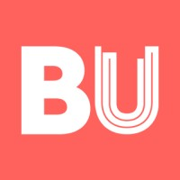

GenuScan: building my first product, from an idea to customer rollout
KTP Associate (Business Analyst) · 2006–2007
Document management0→1IntegrationSME
Copyrite Business Solutions
£150K+
estimated annual added value
Ricoh HQtrained at Ricoh headquarters, Düsseldorf
PublishedKTP case study, Technology Strategy Board (UK)
Job offeroffered a position with the Company
KTPKnowledge Transfer Partnership with Bournemouth University
Partners

Bournemouth University
RiRicoh
TeTechnology Strategy Board
“I worked with Salman for a number of years and he was a respected, well liked and valued member of the team. He was extremely self-sufficient, resourceful and capable, and his commitment and work ethic was exemplary. Salman was at the forefront of the software technology in our sector at the time… His technical and analytical skills meant that he grasped the project quickly and was able to lead and drive the project on at a high level.”
Ian Stewart · Director, Copyrite Business Solutions
The full story
Context
COPYRITE was my first exposure to working in England, and in industry.
Copyrite Business Solutions Ltd was established in 1993 and is a small to medium-sized enterprise (SME) based in Wimborne, Dorset. The Company is one of the leading suppliers of print, software and IT solutions for UK businesses. It prides itself on providing a complete office service from supplying machinery such as photocopiers, printers, fax machines and scanners to offering software, managed IT services, support and service engineers to customers.
About the project
Copyrite recognised the opportunity for introducing advanced business and IT skills to complement its existing range of services. The Company wanted to use a model-based approach in the design of value-added electronic document management (EDM) software applications. Copyrite identified that it could better respond to customers’ requests for business consultancy by implementing best-practice business integration and workflow management procedures. Copyrite also anticipated access to a vast market that would include the majority of UK office-based businesses. The Company looked to Bournemouth University for guidance and support through collaboration.
From an idea to a product
The company just had an idea; they had heard about it, nothing more. That was my brief. From there, I did research, played around with the technology, explained the concept and got approval for funding to buy the SDK. I prototyped, got trained at Ricoh headquarters in Düsseldorf, travelled, spoke to clients and showed them, and spoke to our document management provider to agree the interface. GenuScan was configurable, and I documented the configurations and how to do them.
GenuScan
The development of GenuScan was one of the key successes of the project. This is a ‘generic connector’ that enables documents to be scanned in and transferred to the document control application, running on a PC. This function can be customised to meet user needs and it can be run without specialised hardware or software skills.
Reporting for the directors
On the side, I offered to create reports for the company using Crystal Reports, which saved the directors many hours of requesting reports from vendors. To produce crisp Crystal Reports, I had to work with the vendor to understand their data model.
Benefits
This KTP project successfully fulfilled its aim of implementing business integration and workflow management procedures in-house. It was also able to extend its EDM systems by building on enabling technologies that could be used by its customers.
The KTP project has ushered in a culture change within Copyrite such that IT solutions are now seen as crucial to the success of its business operations. New skills have been introduced including an improved understanding of document control applications, ways of increasing the visibility of business data and a greater understanding of customer needs. New capabilities have also been acquired, such as new functions to increase sales and access markets, and these will provide a long-term legacy from the KTP. The Company now has the ability to manage, modify and manipulate new products. Copyrite also has the understanding necessary to develop subsequent versions of new products, and these capabilities will help to maintain performance and retain a competitive edge.
As a result of the project, the Company has a higher profile within its existing markets and the confidence and ability to exploit new markets. GenuScan has been rolled out to current and new customers. Already it is estimated that the annual added value of these products and services will be in excess of £150,000. The Company can rely on its new culture, where new IT capabilities are embraced, to provide a healthy competitive advantage. It also has the appropriate systems and procedures to underpin its business operations and support business growth in the future.
The Associate
The Associate needed an understanding of both advanced business and IT skills for this KTP project. He has been praised because his performance and initiative exceeded what was required. He has acquired a good grounding in the work of the Company, its business practices, its customers’ needs and the challenges that face an SME. This enabled him to develop the GenuScan product and associated IT solutions. The Associate has increased his knowledge of business development and also associated software and IT skills. He received training in proprietary packages associated with document management and process control. In addition, he has improved his skills and abilities in project management, leadership, teamwork, communication and negotiation. He was offered a position with the Company.
“I really enjoyed taking on responsibility at the start of my career, it helped me developing my technical and project management skills. It also gave me a sense of achievement.”
Results
For Copyrite:
Culture change embedded to embrace IT solutions
New software and applications to provide greater access to business data
A new product that can be changed and refined to exploit new markets
Integrated systems established to enhance workflow management
Annual sales turnover is expected to rise by over £150,000
For me:
Improved skills in providing advanced business and IT solutions
Experience of product development
Professional development and greater awareness of business realities
Offer of employment for the Associate by the Company
It is a published study, selected as a case study by the Technology Strategy Board, UK.
What I learned
I built the product using folder-level integration, which at the time I thought was the incorrect way. Later in my career I realised I was well ahead: the integration I created for the end-to-end GenuScan product, along with its configurations, was a top-notch product. When I went into a pure engineering firm, I found the products there were poor. So I could have stayed at COPYRITE, learned more from the industry and kept building the capability, but I did not know all that at the time.
Source
Refer to the case study published by the Technology Strategy Board: “Copyrite Business Solutions Ltd: KTP helps grow software skills and business systems to exploit new markets” (Knowledge Transfer Partnerships case study 1097).
“By offering a KTP placement we have been able to access the software and business expertise of not only the Associate but the University team behind him.”
Ian Stewart · Director, Copyrite Business Solutions